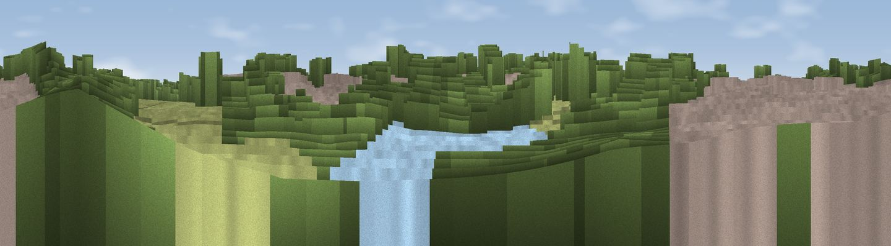

Viewpoint near Monkspath
#45157 in England · top 92% of its area beats it · near MonkspathWhere it is
The exact computed spot (SP 14093 77249). Click the marker for map links.
The view, rendered

A 360° render of this exact spot computed from the terrain model, tree cover and land cover — summer colours, afternoon light, calibrated against photographs of famous viewpoints. Real trees, hedges and buildings will differ in detail.
The panorama
Grey silhouette: terrain skyline in each direction (720 bearings, Earth curvature and refraction included). Dashed green: skyline with trees (+15 m) and buildings (+8 m) as obstacles. Blue strip: how far the ground is visible on each bearing.
Where the view opens
Wedge length = distance to the farthest visible ground on that bearing (vegetation-aware). Rings at 10, 25 and 50 km.
What fills the view
62% woodland · 22% grassland · 12% built-up · 4% water
Angular shares of the visible panorama (visual magnitude), not map area. Landscape diversity 0.44 (0–1 Shannon).
Key numbers
More beautiful places nearby
The staircase of upgrades: each row has a higher view potential than everything closer. Driving times are estimates from straight-line distance, calibrated against real road routing — check an actual route before setting out.
| Place | Direction | Drive | Score |
|---|---|---|---|
| Gay Hill | W · 8 km | ~16 min | 22.9 |
| Viewpoint near Danzey Green | SSW · 9 km | ~17 min | 40.3 |
| Viewpoint near Lapworth | SSE · 9 km | ~18 min | 45.4 |
| Viewpoint near Hopwood | W · 10 km | ~19 min | 47.1 |
| Viewpoint near Coleshill Heath | NE · 10 km | ~20 min | 51.6 |
| Viewpoint near Hopwood | W · 11 km | ~20 min | 55.5 |
| Round Hill | SSW · 15 km | ~27 min | 61.7 |
| Lodge Hill | S · 16 km | ~28 min | 64.0 |
52.39309, -1.79432 · source: osm viewpoint · position refined by local search. Computed location — check access rights before visiting.